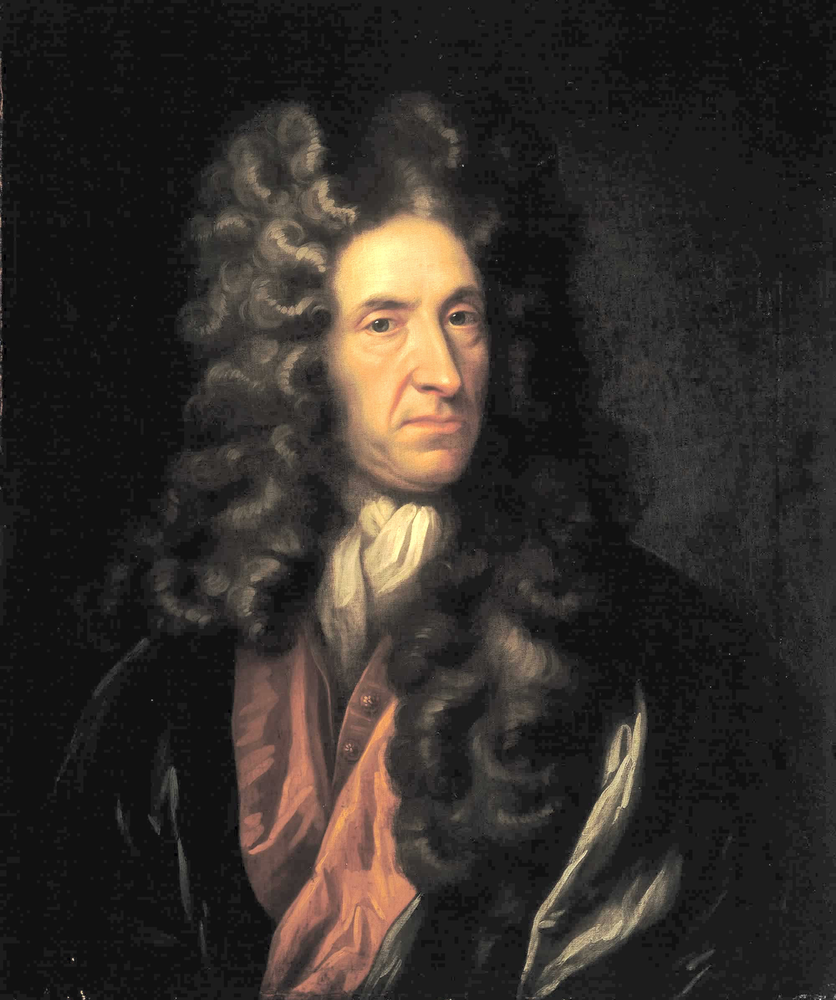
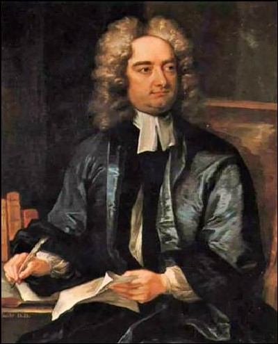

Klasicismus v Anglii se rozvinul v 17. a 18. století, kdy literáti
čerpali inspiraci z antické literatury a filozofie. Tento směr kladl
důraz na rozum, rovnováhu a přísná pravidla literárního stylu.
Významní angličtí autoři jako Daniel Defoe a Jonathan Swift se
soustředili na morální a satirické prvky, často kritizující
společenské neduhy.
Daniel Defoe [Dyfou]

-
žil od roku 1660 do roku
1731
- anglický spisovatel, novinář a obchodník
-
začal organizovat špionážní síť a bývá považován za
zakladatele anglické špionážní služby
- nejslavnější dílo - Robinson Crusoe
- nový typ románu - dobrodružný
Jonathan Swift

-
nejslavnější dílo -
Gulliverovy cesty (ukázka
zde)
-
utopický dobrodružný román -
cestopis
- díly
- Liliput
- Země obrů
- Létající ostrov
- Země, kde vládnou ušlechtilí koně